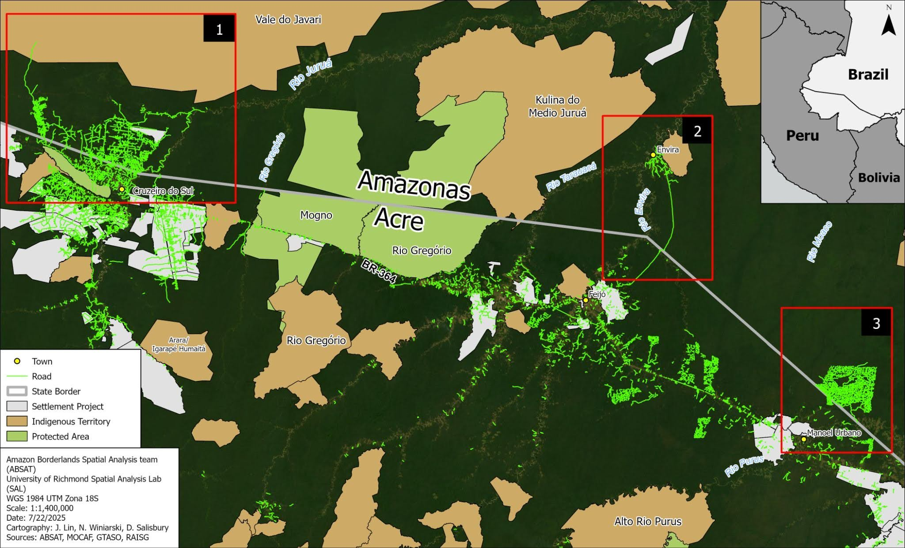
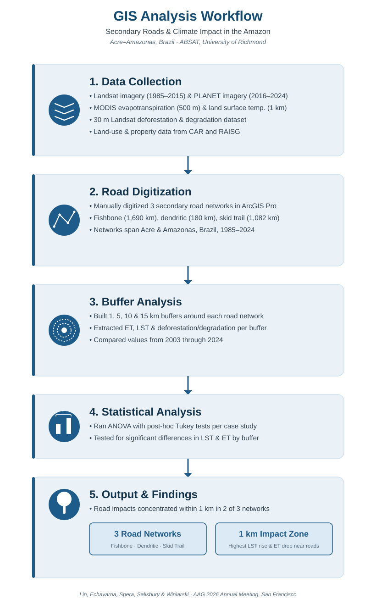

Case study · 2025
Roads to Climate Change: Three Case Studies of Secondary Roads in Acre-Amazonas, Brazil
Measuring how three secondary road networks in the Brazilian Amazon have reshaped deforestation, degradation, land surface temperature, and evapotranspiration between 2003 and 2024.

The question
The Amazon rainforest stores the equivalent of 20-25 years of global carbon emissions, recycles roughly half of the precipitation across the Amazon River Basin through evapotranspiration, and helps cool the region's land surface. Road-building is one of the clearest drivers of the deforestation and forest fragmentation that put those functions at risk, and in the Brazilian Amazon every kilometer of official, first-cut road is associated with roughly 49 more kilometers of secondary roads built by non-state actors for resource extraction, largely without regulation.
Prior research shows that deforestation is heavily concentrated near roads and rivers, and that deforested, fragmented land tends to run hotter and drier, reinforcing the dry seasons that further stress the forest. What was less clear was how this plays out across different kinds of secondary road networks, and whether forest regrowth after logging can meaningfully reverse the effect. This project examined three contrasting networks in Acre and Amazonas, Brazil, to find out.
What I did
Working with Jasmine Lin and the Amazon Borderlands Spatial Analysis Team (ABSAT), I analyzed the environmental impacts of road development using GIS and remote sensing. I created buffer analyses, processed and exported satellite-derived raster datasets in Google Earth Engine, and performed spatial analyses in ArcGIS Pro to evaluate changes in evapotranspiration, land surface temperature, and deforestation along the Brazil–Peru border. This was done using ArcGIS Pro using Landsat imagery (1985–2015, 30 m resolution) and PLANET imagery (2016–2024, 4.77 m resolution) across three case studies: a 1,690 km fishbone network branching off the BR-364 near Cruzeiro do Sul, a 180 km dendritic network that grew from the independent settlement of Envira, and a 1,082 km skid trail network built for selective logging on a single privately owned parcel between 2015 and 2022.
For each network, we built 1, 5, 10, and 15 km buffers and used them to extract land surface temperature (MODIS, 1 km resolution), evapotranspiration (MODIS, 500 m resolution), and deforestation and degradation (a 30 m Landsat-based dataset) from 2003 through 2024. Land-use and property boundary data came from Brazil's Cadastro Ambiental Rural (CAR) and the Rede Amazônica de Informação Socioambiental Georreferenciada (RAISG). We then ran an ANOVA with post-hoc Tukey tests for each case study to determine whether temperature and evapotranspiration differed significantly between buffer distances in 2003 and in 2024.

What I found
In the fishbone and dendritic networks, the impact of the roads was concentrated within 1 km: that buffer alone accounted for roughly 70 km² of degradation and close to 200 km² of deforestation in the fishbone case, more than the sum of all the wider buffers combined. Land surface temperature within 1 km rose more sharply than in farther buffers between 2003 and 2024, while evapotranspiration dropped significantly closer to the roads even as it declined Amazon-wide.
The skid trail network told a different story. It showed almost no significant difference in temperature or evapotranspiration between buffer distances, suggesting that the secondary forest regrowth that followed the end of active logging may, over time, blunt the network's lasting environmental footprint. Across all three case studies, temperature rose and evapotranspiration fell overall from 2003 to 2024, consistent with broader Amazon-wide climate trends, but the sharpest, most road-specific signal appeared within 1 km of active secondary roads.
What I learned
Comparing three structurally different road networks side by side taught me how much the story changes depending on what is actually happening on the ground, not just the presence of a road. I learned to work across datasets at very different resolutions, from 4.77 m PLANET imagery down to 500 m MODIS composites, and to recognize when a result (like the deforestation pattern near the Rio Envira) is being driven by a confounding variable rather than the road itself. Presenting alongside faculty and student collaborators at AAG also reinforced how important it is to communicate uncertainty honestly rather than flattening three distinct case studies into one tidy conclusion.
Deliverables
- Research Poster → Presented at the American Association of Geographers (AAG) 2026 Annual Meeting, San Francisco, CA.
- Works Cited → Full reference list for the study, linked via QR code on the poster.